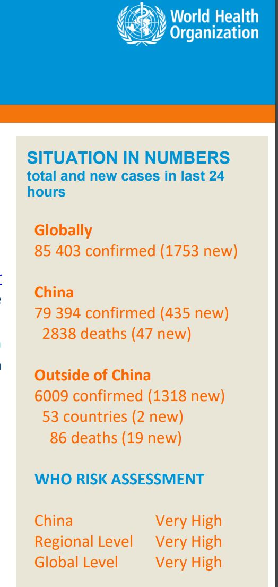

伊朗确诊日增65%后已近千，军方成立“圣战基地”抗击疫情
原文链接 备份链接 图片来源：Press TV 记者：肖恩 “ 伊朗新冠肺炎确诊病例数已超过日本，在海外国家中仅次于韩国和意大利。 ” 伊朗卫生部3月1日通报称，24小时内，该国新增确诊病例385例，累计978例，其中死亡54例，治愈出 …

意大利伦巴第大区一所医院。图片来源：CNN
“
全球新冠肺炎疫情播报，持续更新。
”
（本文持续更新中。文中段首所示时间为本文更新时间。）
0800【中国境外日新增确诊病例连续第4日超过中国】
根据世界卫生组织每日发布的全球最新疫情数据，截至中部欧洲时间29日上午10时（北京时间29日17时），全球共确诊85403例新型冠状病毒肺炎病例。其中，中国境外地区确诊6009例。24小时内，全球新增新冠肺炎确诊病例1753例，其中中国境外新增1318例，中国新增435例。

0800【意大利累计确诊新冠肺炎病例1128例，死亡29例】
当地时间2月29日傍晚，意大利民防部门负责人博雷利在例行疫情通报中表示，截至当天17时（北京时间3月1日0时），该国共计确诊新型冠状病毒肺炎病例1128例，较前一天增加240例，其中29人死亡，50人治愈。现有确诊病例中，52%属无症或轻症患者，约10%的患者接受重症监护治疗。目前意大利50%的确诊患者都出现在伦巴第大区。
0800【意大利足球甲级联赛推迟比赛】
意大利足球甲级联赛因新冠肺炎疫情推迟五场赛事，分别是尤文图斯对国际米兰、AC米兰对热那亚、帕尔马对史柏、萨索罗对布雷西亚、乌迪内斯对佛罗伦萨。
0800【法国累计确诊100例新冠肺炎感染病例】
法国当地时间2月29日晚，法国官方通报累计确诊新冠肺炎病例达100例，其中治愈12例，死亡2例。目前，86例在医院治疗，其中9例病情严重。
0800【德媒：德国确诊病例升至99人，狂欢节聚集性感染60人】
中新社综合德国“时代”在线等媒体报道，截至2月29日晚20时，德国确诊病例已升至99人，其中出现狂欢节聚集性感染的北威州确诊人数最多，达60人。由于目前德国联邦卫生部已将每日发布最新确诊人数信息的权限移交至罗伯特·科赫研究所，上述确诊人数还有待该所3月1日最终确认。
0800【累计确诊病例增至24例】
根据瑞士官方公布，截至当地时间29日下午5点，共检测出24例新冠肺炎呈阳性病例（包括确诊和等待确诊）。其中日内瓦5例，首都伯尔尼出现首例。
0800【卢森堡确认首例新冠肺炎感染者】
当地时间29日晚，卢森堡卫生部长列内特在专门召开的新闻发布会上表示，该国确诊首例新冠肺炎病例，患者是一名40岁左右的男性。他近期从意大利返回卢森堡后，主动前往医疗机构接受检测。目前该患者状态良好，正接受隔离治疗。
0800【爱尔兰出现首例新冠病毒感染者】
当地时间2月29日晚，爱尔兰卫生部发表声明宣布，爱尔兰确诊首例新型冠状病毒感染者。患者是一名男性，来自爱尔兰东部地区，曾经去过发生疫情的意大利北部地区，目前患者已经开始接受适当治疗。
0800【确诊首例新冠肺炎病例，是第三个出现病例的拉美国家】
据央视新闻消息，当地时间2月29日，厄瓜多尔卫生部部长卡塔莉娜⋅安德拉穆诺在该国第一大城市瓜亚基尔召开新闻发布会，公布确诊该国首例新冠肺炎病例，厄瓜多尔也成继巴西、墨西哥后确诊有新冠肺炎病例的第三个拉美国家。
0800【确诊第四例新冠肺炎病例，患者曾赴意大利】
据央视新闻消息，墨西哥当地时间2月29日，墨西哥科阿韦拉州州长瑞克尔梅发布信息，称在该州的托雷文市确诊了最新1例新冠肺炎病例，该病患是一名20岁的女性，她曾经在2020年1月和2月期间在意大利米兰停留过。这是墨西哥确诊的第4例新冠肺炎病例，也是首位确诊的女性患者。
0800【确诊第二例新冠肺炎病例，患者曾赴意大利】
巴西卫生部2月29日通报称，该国确诊第二例新冠肺炎病例，患者于2月27日从意大利米兰返回圣保罗。巴西卫生部称，目前无证据新冠病毒在国内传播。
0800【特朗普证实美国首例死亡病例，华盛顿州进入紧急状态】
华盛顿州长英斯利表示，将动用州政府一切必要资源，来对抗新冠病毒的暴发，如果需要会出动华盛顿州国民警卫队。华盛顿州卫生官员说，这名首例死亡个案具有潜在的健康状况，生前没有旅行史或接触过已知的确诊病例。总统特朗普证实，死者居住在华盛顿州，年纪为50多岁。
0800【美国现第3例感染途径不明病例】
据美媒报道，美国加州、俄勒冈州和华盛顿州的当地卫生部门发现4例新增新冠肺炎病例。其中3例既无出国旅行史，也未与游客或已知病例接触。
截至2月29日，美国累计有69人新冠病毒检测呈阳性或初步阳性，初步阳性结果是由地方实验室检测得出，将由疾控中心复测确认。美国食药监局(FDA)目前已采取措施加速医院检测，据报道，美国先前检测政策因流程繁琐耗时而饱受诟病。
0800【韩国累计确诊新冠肺炎3150例，新天地总会长遭举报】
韩国新天地受害者团体宣布将以违反《传染病预防法》和《特定经济犯罪加重处罚法》对新天地总会长李万熙提起指控。
0800【累计确诊946例，三县首次出现确诊病例】
截至29日，包括“钻石公主”号游轮的乘客及船员在内，日本国内新冠肺炎感染者总计达946人。其中宫城、新潟和高知各县首次出现确诊病例。
0800【伊朗议会多位代表确诊新冠肺炎，累计确诊593例】
据伊朗国家电视台2月29日报道，伊朗议会中央省萨韦市代表穆罕默德⋅礼萨⋅曼苏里新冠病毒测试呈阳性，目前在家自我隔离。另据伊朗迈赫尔通讯社29日消息，伊朗议会东阿塞拜疆省沙贝斯塔尔市代表马苏米⋅阿戈普尔新冠病毒测试呈阳性。截至当地时间29日中午，伊朗共有新冠肺炎确诊病例593例，43例死亡。
0800【伊拉克新增确诊5例，累计13例】
据荷兰BNO新闻网消息，伊拉克新增5例新冠肺炎确诊病例，其中4例出现在首都巴格达迪，1例出现在巴比伦省（Babil）。
0800 【新南威尔士州出现伊朗输入新冠肺炎确诊病例】
3月1日，根据澳大利亚新南威尔士州卫生部门消息，一位40多数的男子从伊朗返回新南威尔士州后被检查出新冠肺炎病毒呈阳性。该男子是在返回澳大利亚两天之后出现的感染症状，目前已被医院收治。此前，昆士兰州也出现了伊朗输入病例。澳大利亚联邦政府29日宣布对伊朗实施旅行禁令。
0800【新加坡累计确诊102例】
新加坡卫生部29日晚发布公告，当天新增4例新冠肺炎确诊病例，累计确诊102例。4例确诊病例皆与此前确诊的一个感染源有关联。新加坡卫生部同时发布，今天有3例患者治愈出院，出院总数达到72人。另有7例危重。

文章已于修改
原文链接 备份链接 图片来源：Press TV 记者：肖恩 “ 伊朗新冠肺炎确诊病例数已超过日本，在海外国家中仅次于韩国和意大利。 ” 伊朗卫生部3月1日通报称，24小时内，该国新增确诊病例385例，累计978例，其中死亡54例，治愈出 …
原文链接 备份链接 近期，多国新冠肺炎感染者数量持续攀升。截至目前，意大利累计死亡患者人数已经达到17人，确诊病例增至655例，疫情蔓延至意大利13个大区。 而作为当前受新冠肺炎疫情影响最严重的欧洲国家，意大利的多项经济活动正在经受冲击。 …
原文链接 备份链接 意大利米兰街头。图片来源：半岛电视台 “ 全球新冠肺炎疫情播报，持续更新。 ” （本文持续更新中，点击左下角阅读原文，实时跟踪国际疫情动态。文中段首所示时间为本文更新时间。） 意大利 0800 【意大利新冠肺炎死亡病例 …
原文链接 备份链接 【财新网】（记者 田佳玮）当地时间2月1日，菲律宾卫生部宣布，一名新冠病毒肺炎患者在菲律宾救一家医院病逝。 这例死亡病例是一名44岁的中国籍男性，来自武汉，他也是菲律宾境内被确诊的第二例新冠病例。日前，这名男子 …
原文链接 备份链接 【财新网】（记者 丁捷 综合）新型冠状病毒肺炎感染人数快速上升。根据国家卫健委数据，截至1月29日24时，中国累计报告确诊病例7711例，过去一天新增1737例确诊病例，西藏已出现首例确诊病例。新增死亡38例，新增疑 …